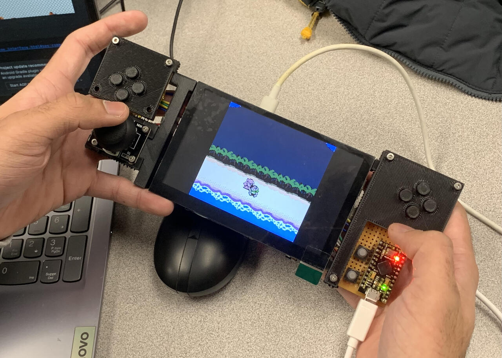
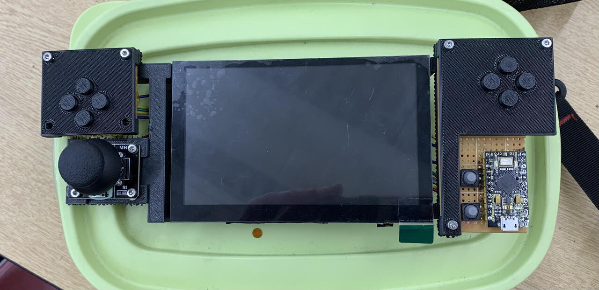
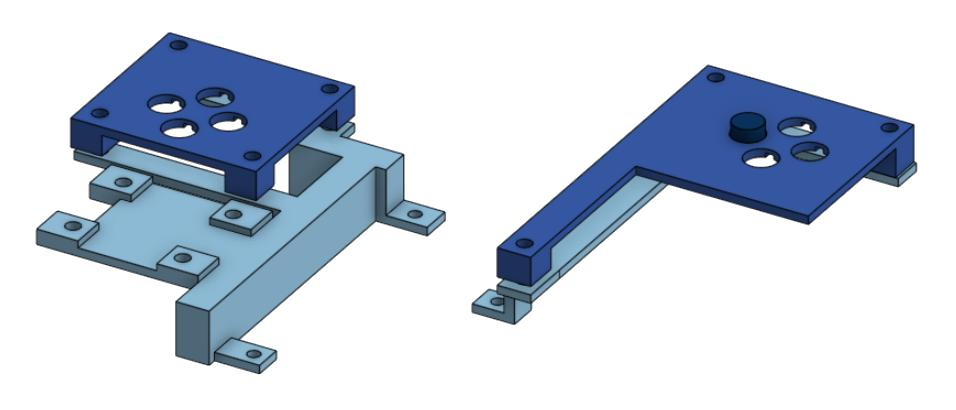

Dec. 2024 - Feb. 2025
Handheld Gaming Console
A fully custom handheld gaming console built around a Raspberry Pi 4 and Arduino Pro Mini, GPIO input matrix, IPS display, battery management, and a 3D-printed enclosure designed and assembled end to end.
S1 · Overview
The console is built around a Raspberry Pi 4 as the main compute board, paired with an Arduino Pro Mini that handles button input over a USB power/data interface. The Pi runs the emulation and display output, while the Arduino reads the physical controls and reports them back, keeping the input electronics separate from the Pi's own GPIO and power rail.
Everything is hand-wired on perfboard rather than a custom PCB, since the goal here was to get a working handheld built quickly and validate the layout before investing in a proper board. The two controller modules connect back to the input electronics through ribbon cable, with the whole assembly held together by a 3D-printed frame modeled to fit around the controllers.

S2 · Input & Display
Button and joystick inputs are wired into a matrix scanned over GPIO, rather than giving every button its own dedicated pin. This kept the wiring inside the tight side-module enclosures manageable.
The display is an IPS panel with an integrated speaker, chosen for the wider viewing angles and better color reproduction over a standard TFT panel. It sits center-frame between the two control modules, connected to the Pi over its native display interface, with the speaker wired directly into the Pi's audio output.

S3 · Power & Enclosure
Power is managed through a PiSugar 2 Pro battery board, which handles charging and supplies regulated power to the Pi so the whole console can run untethered. The Arduino side is powered separately over its own USB interface, keeping the input electronics isolated from the Pi's power rail.
The enclosure went through a couple of iterations, the earlier version was built more as a proof-of-concept scaffold to hold the display and side modules in place, while the later revision cleaned up the mounting and cable routing for a more finished, pocketable shape. Many iterations did not provide enough strength to hold up the controllers properly. The current design is structurally sound and can be held comfortably in hand.
